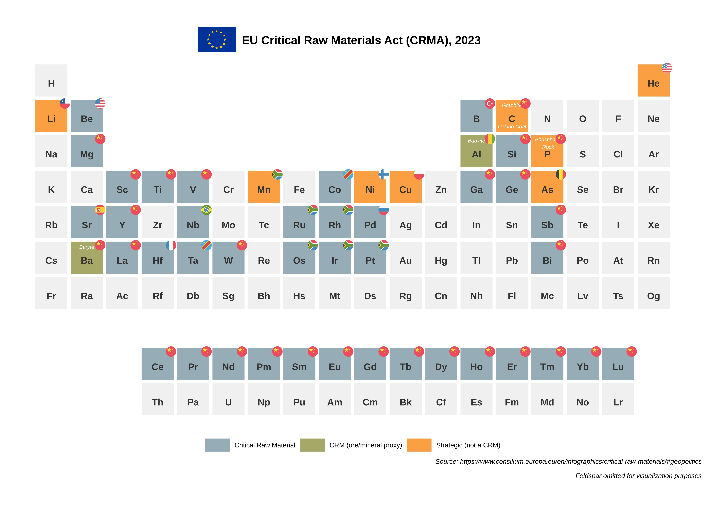

This is a collection of plots made with ggPSE, showcasing the different ways per element-resolved data can be mapped onto the periodic table (svg avaiable in the repo).
Click any image to view it at full resolution.


Plot 1: Mapping of the EU critical materials listed in the 2023 document on CRM’s.